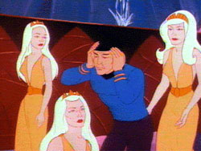

|
MANCHETE
DO EPISDIO
O
canto da Sereia de Jornada afoga destaque de Uhura
Episdio
anterior | Prximo episdio Sinopse:
Data Estelar: 5483.7.

A USS Enterprise entra em um setor no mapeado do espao onde naves da Federao
vem sendo perdidas nos ltimos 150 anos . De posse de informaes conseguidas
junto aos Imprios Klingon e Romulanos, a Frota Estelar descobriu que
desaparecimentos neste setor vem acontecendo exatamente a cada 27. 346 anos
solares
A Enterprise esta no setor exatamente neste perodo de tempo para investigar.
Quando o ciclo de tempo est completo, Uhura comea a receber um sinal
sub-espacial que Spock descobre estar sendo originado do sistema Taurean, para a
onde a Enterprise se dirige imediatamente.
Ainda com a Enterprise em curso, Uhura percebe um comportamento estranho por
parte dos homens da tripulao. Estes comeam a ter alucinaes com lindas
mulheres por toda parte. A parcela feminina no afetada.
Subitamente um planeta surge na tela principal da nave, como se antes estivesse
camuflado. Scotty deixado em comando enquanto Kirk, Spock, e McCoy descem ao
planeta procurando pela fonte do sinal, e encontram uma estrutura, que embora de
aparncia extica, parece ser uma espcie de prdio. Ignorando qualquer
possibilidade de perigo devido a ao do sinal sobre suas mentes eles entram
no lugar onde so recebidos por dezenas de lindas mulheres de aparncia humanide.
As leituras do tricorder de Spock indicam uma estranha reao bio qumica nas
mulheres. Estas possuem um aparelho que capaz de mesmo a distncia mostrar
tudo o que acontece a bordo da Enterprise, algo que lhes permitiu saber os nomes
dos integrantes do grupo de descida, por exemplo. Elas tambm admitem serem
responsveis pela gerao do sinal que levou a Enterprise at aquele
planeta.
As anfitris convidam o grupo para uma espcie de celebrao, e durante a
festa os tripulantes comeam a desmaiar. Quando eles acordam percebem uma espcie
de aparelho em forma de arco em suas cabeas, e que seus corpos esto
envelhecendo.
A bordo da Enterprise, Uhura e Chapel descobrem que o planeta causa um tipo de
instabilidade nos machos, que pode lev-los a morte em caso de exposio
prolongada. Uhura imediatamente ordena que todas as mulheres da equipe de
segurana se dirijam a sala de transporte e que nenhum homem poder ser
transportado para o planeta sem sua autorizao.
Enquanto isto, Kirk Spock e McCoy encontram-se totalmente desorientados, e
aparentemente sem total clareza da sua situao. Mesmo assim eles tentam
retornar a Enterprise, mas so impedidos por suas captoras. A bordo da
Enterprise, Uhura assume o comando da nave no lugar de Scotty, que tambm se
encontra afetado pelo Sinal de Lorelei faz de Chapel a oficial medica
encarregada.
No planeta, os prisioneiros, apesar de fracos, comeam a perceber que precisam
escapar. McCoy, ainda de posse de seu kit medico, injeta uma substancia chamada
cortropine em cada um deles, o que consegue melhorar seu estado geral.
Spock consegue danificar a trava magntica da porta do local onde esto
presos, permitindo a fuga dos prisioneiros, mas no sem que sejam percebidos.
O grupo foge para o exterior do prdio, mas seguido por um grupo de
mulheres. Sem que estas percebam eles conseguem escalar uma espcie de
monumento que encontram em meio a vegetao do jardim que cerca o local, e
despistam suas perseguidoras, que retornam.
Spock conclui que os dispositivos instalados em suas cabeas tm a funo de
drenar a fora vital de seus corpos e a transmitir para o corpo das mulheres de
Taurus II. Tal processo est fazendo com que eles envelheam 10 anos a cada
dia. Kirk percebe que se outros homens descerem cairo na mesma armadilha,
tornando imperativo informar a nave. Devido a maior resistncia fsica de
Spock, por causa de sua origem Vulcana, Spock se oferece para tentar retornar ao
local onde estavam presos e encontrar um de seus comunicadores.
Ele retorna, e consegue utilizar o mesmo dispositivo que as mulheres usavam para
observar a Enterprise para descobrir onde esto os comunicadores, e solicita o
envio de um grupo de resgate formado somente por mulheres, e ele recapturado.
A bordo da Enterprise Uhura j esta preparada e envia um grupo armado para
procurar pelos tripulantes desaparecidos.
O grupo de descida recebido sob ameaa, Theela manda Uhura retornar a nave.
A tenente diz que s sair dela com o capito Kirk e seus homens o ordena o
ataque com os fasers em tonteio a equipe da Enterprise colocam todas as mulheres
fora de ao e partem para vasculhar o local a procura de seus camaradas.
Chappel encontra Spock, mas este est muito fraco para dizer onde seus
camaradas se encontram. Enquanto isto a situao de Kirk e seus colegas se
complica, pois comea a chover forte, inundando o local onde eles se encontram,
e o grupo no tem mais foras para sair de l sozinho.
A bordo da nave, Spock ainda muito fraco instrui Chappel para desviar toda a
energia disponvel da nave para os escudos, enquanto ainda na Superfcie,
Uhura literalmente quebra tudo tentando forar Theela a dizer onde se
encontram o capito e os outros. A mulher ento conta a histria de como os
homens de seu planeta comearam a enfraquecer e morrer de velhice antes do
tempo, enquanto as mulheres passaram a receber a sua fora vital para
sobreviver. Elas desenvolveram tambm capacidades telepticas capazes de lhes
permitir o controle sob certas reas do crebro masculino, poder que usavam
para trazerem novas vitimas a seu planeta para poderem se manter vivas, pois
junto com as outras mudanas, elas perderam a capacidade de ter filhos.
Theela usa o seu aparelho para descobrir onde esto Kirk e os outros. Ao v-los
pelo aparelho Uhura percebe que a situao grave. Ela leva um grupo at o
local e consegue livrar seus companheiros antes que eles se afoguem. Os homens so
levados de volta a nave, mas os tratamentos usados para tentar reverter o
processo no surtem efeito. Eles resolvem ento usar o tele transporte para
tentar restaurar as molculas de seus corpos ao estado original. O processo
funciona, e eles voltam ao normal e Uhura informa a Theela que ela e suas
companheiras sero transportadas para um planeta habitvel onde podero ter
de volta sua vida normal. Comentrios:
The Lorelei Signal no foi mesmo
uma boa idia, para dizer o mnimo. A idia de uma raa de mulheres usando
poderes telepticos para atrair homens, que seriam depois sugados at a
morte at que poderia dar um bom episdio de Twlight Zone, mas combina
pouco com Jornada nas Estrelas.
Embora em uma srie de fico cientfica, principalmente animada, possamos
considerar que nada seja impossvel, podemos tambm esperar que determinadas
situaes sejam evitadas. Esta verso do canto da sereia enfeitiando
todos os homens a bordo da nave uma destas coisas, afinal, o que se ganha com
isto?
Quase nada, nem no quesito fico, nem na parte cientifica da coisa. No
se explica (talvez isto seja at bom) quais os motivos que levaram o planeta a
exercer o efeito mostrado no episdio, a simplesmente se aceita que este efeito
seja exatamente o mesmo para todo macho, independente de sua espcie, humano,
vulcano, Klingons, romulanos, etc, etc,.
Situaes como um trio de velhinhos tentando escapar de um vaso (na falta de
expresso melhor) aliengena enchendo de gua da chuva apenas depe contra a
dignidade de nossos personagens. Pelo menos Spock foi poupado disto. Alias,
podemos perguntar por que Theela se lembrou de usar o seu aparelho para
descobrir os fugitivos quando foi ameaada por Uhura. Teria poupado todo aquele
corre, corre.
Outra pergunta a fazer porque as Sereias teriam retirado todos os
equipamentos de grupo de desembarque, menos o kit mdico de McCoy. Seria
preocupao com o estado de sade deles? No fim de tudo vemos pela primeira
vez o uso de tele-transporte como tabua de salvao do roteiro, fato que
infelizmente viria a se tornar constante em Jornada.
De positivo nisto tudo, o destaque dado a Uhura no segmento. A oficial de
comunicaes nunca foi to marcante quanto neste episdio. Uhura age com
coragem e competncia, assumindo o comando com firmeza, e usando tticas de
persuaso que dariam inveja mesmo a Kirk em seus melhores dias de Diplomacia
Cowboy. Apesar disto ter acontecido na Srie Animada, a prpria Nichelle
Nichols em sua autobiografia, ("Beyond Uhura - STAR TREK and Other Memories"
1994) declara sua grande simpatia por este episdio, devido ao importante
papel de sua personagem. Pena que as motivaes e desdobramentos tenham sido
mal elaborados.
Quem gosta de episdios onde o grande trio no so os elementos principais,
encontrar neste segmento alguma dose de interesse, caso contrario, ele bem
limitado. Citaes:
Scott: "Ships Log. Stardate 5483.8. Engineering
officer Scott in command. We are in orbit around planet two in the Taurean
system. Probes and sensors indicate that there was once a vast civilization here
-- (sigh) lovely, lovely -- however, life readings are sparse and concentrated.
Captain Kirk is beaming down with scouting party to investigate."
("Dirio de bordo, data estelar 5483.8. Oficial de Engenharia Scott no
comando. Estamos em rbita do segundo planeta do sistema Taurean. Os sensores
indicam que aqui j existiu uma vasta civilizao e, -encantador, encantador,
- entretanto, leituras de sinais de vida so escassas e concentradas. O capito
Kirk est descendo com um grupo de escolta para investigar.")
Uhura: "Ships Log. Supplemental. Lieutenant Uhura recording. Due to
Chief Engineering Officer Scott's euphoric state of mind, I'm assuming command
of the Enterprise. I accept full responsibility for my action. A detailed
account will be recorded later."
("Dirio de bordo, suplemento. Tenente Uhura gravando. Devido ao estado
eufrico do oficial de engenharia Scott, estou assumindo o comando da
Enterprise. Eu aceito total responsabilidade por minhas aes. Um relatrio
detalhada ser gravado posteriormente.")
Uhura: "Release Captain Kirk and his men, or we will destroy your temple!"
("Liberte o capito Kirk e seus homens, ou ns destruiremos o seu templo.") Trivia:  Esta foi a primeira vez que vemos em tela o uso de tele-transporte para
consertar danos aos tripulantes. Este caso em especifico muito similar ao mtodo
usado para reverter um processo de envelhecimento acelerado da Doutora Pulaski,
no episdio de A Nova Gerao Unnatural Selection.
Esta foi a primeira vez que vemos em tela o uso de tele-transporte para
consertar danos aos tripulantes. Este caso em especifico muito similar ao mtodo
usado para reverter um processo de envelhecimento acelerado da Doutora Pulaski,
no episdio de A Nova Gerao Unnatural Selection.
A idia deste episdio viria a ser reciclada em Voyager no episdio "Favorite
Son".
Existe um planeta chamado Taurus II no episdio do primeiro ano da Srie Clssica
The Galileo Seven. Algum esqueceu deste detalhe ao escolher um
nome para o planeta deste segmento.
Margaret Armen, autora da histria, escreveu para a Srie Clssica os
seguintes episdios: "The Gamesters of Triskelion", "The
Paradise Syndrome" e "The Cloud Minders". Para a Srie
Animada ela voltaria a escrever o episdio The Ambergris Element".
Conta uma lenda alem que houve um bela jovem chamada Lorelai, que se jogou no
rio Rhine por causa de amor impossvel. Aps sua morte, Lorelei se transformou
em uma sereia, que com seu canto hipntico atraia marinheiros para a morte nas
guas do rio. A lenda virou um poema.
"The Loreley"
I do not know what haunts me,
What saddened my mind all day;
An age-old tale confounds me,
A spell I cannot allay.
The air is cool and in twilight
The Rhine's dark waters flow;
The peak of the mountain in highlight
Reflects the evening glow.
There sits a lovely maiden
Above so wondrous fair,
With shining jewels laden,
She combs her golden hair
It falls through her comb in a shower,
And over the valley rings
A song of mysterious power
That lovely maiden sings.
The boatman in his small skiff is
Seized by a turbulent love,
No longer he marks where the cliff is,
He looks to the mountain above.
I think the waves must fling him
Against the reefs nearby,
And that did with her singing
The lovely Loreley.
(Heinrich Heine)
Notem que a enfermeira Chapel aparece na sala de transporte com seu uniforme
azul, mas as se materializar no planeta ela esta com um vestido vermelho. Logo
depois ela aparece novamente com o uniforme azul.
"The Lorelei Signal" foi novelizado por Alan Dean Foster em
1974.
Ficha
tcnica: Escrito por
Margaret Armen
Direo de Hal Sutherland
Exibido 29/09/1973
Produo: 06 Elenco:
William Shatner como James Tiberius Kirk
Leonard
Nimoy como Spock
DeForest Kelley como Leonard McCoy
James
Doohan como Montgomery Scott
George Takei como Hikaru Sulu
Nichelle Nichols como Uhura
Elenco convidado:
Nichelle Nichols como Computador
Majel Barrett como Oficial de Segurana Davison
James Doohan como Carver
Majel Barrett como Voz feminina
James Doohan como Tenente Arex
Majel Barrett como Theela
Nichelle Nichols como Dara
Episdio
anterior | Prximo episdio
|